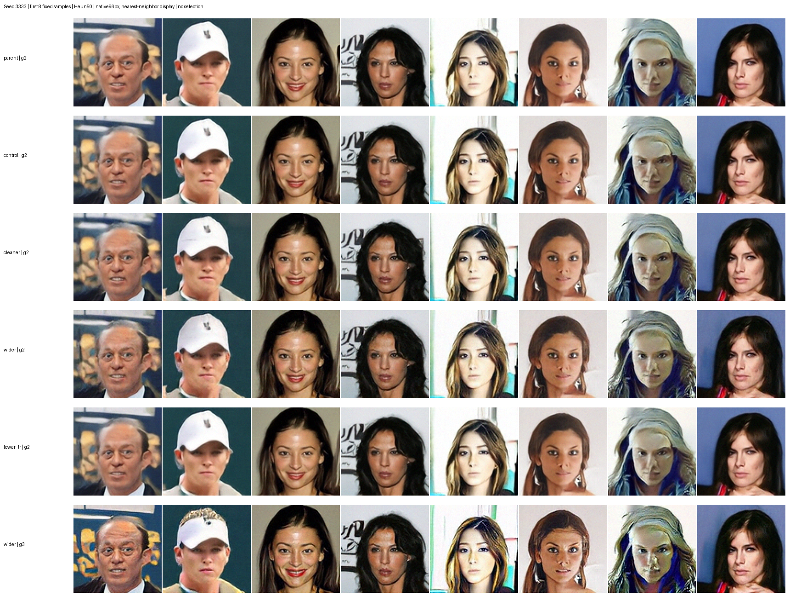
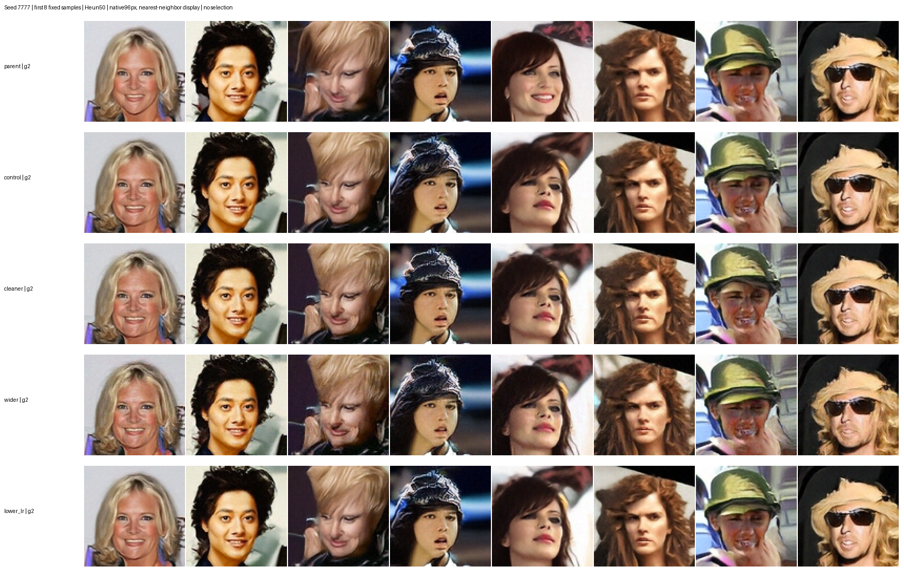

2026-10-25。四组训练和评估全部完成。统一固定种子、Heun50、guide区间[0.1,0.8]，没有best-of-N或API评分。FID越低越好。
| 实验 | 无guidance FID | g2 / seed3333 | g2 / seed7777 | 决定 |
|---|---|---|---|---|
| 上一轮最佳 | 63.50 | 54.95 | 54.02 | 保留比较基准 |
| 原配方继续 | 64.17 | 55.00 | 53.80 | 基本持平，替换 |
| 更低噪声 | 67.24 | 53.96 | 53.34 | 两个种子均改善，继续 |
| 更宽噪声分布 | 74.34 | 56.77 | 56.96 | g2退步；g3仍不如当前最佳，替换 |
| 降低学习率 | 64.52 | 55.24 | 53.94 | 没有稳定提升，替换 |
cleaner在两个g2种子都有改善，但无guidance质量回退，因此它是当前有guidance采样的最佳候选，不代表所有采样设置都改善。宽噪声补测g3得到54.79/54.45，仍逊于cleaner的g2。每次1024生成图与1000验证图，属于筛选评估，不是FID50k或统计显著性证明。
每行固定前8张，不挑图。英文行名对应上表；seed3333最后一行为宽噪声g3。原生96px，仅最近邻放大显示。


| 实验 | 均值 | 标准差 | 采样方式 | 任务 | 状态 |
|---|---|---|---|---|---|
| 继续最佳 cleaner | 0.0 | 0.8 | iid | 59215 | RUNNING |
| 折中均值 | -0.2 | 0.8 | iid | 59216 | RUNNING |
| 更窄分布 | 0.0 | 0.6 | iid | 59217 | RUNNING |
| 分层时间采样 | 0.0 | 0.8 | stratified | 59218 | RUNNING |
四组都从cleaner完整checkpoint（计数24.576M）继续，保留优化器和EMA，各追加8.192M图像，每组1×16GPU。保留中途4.096M checkpoint并自动评估；没有延长已持平的独立旧分支。
全部采用已验证整模型编译，16卡稳态约1.31万张/秒，比旧局部融合提高18.3%。新分层时间采样每个batch覆盖不同CDF区间，保持批均值目标不变；通过覆盖、随机状态和双进程精确断点续训测试，GPU运行前再做有限值检查。